✧ Welcome to My BLOG !
.png) 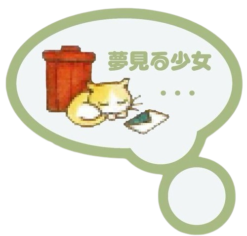
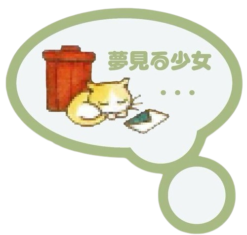
꩜ About Me ꩜
Hello! My name is Neva Febrina. I’m currently a student at Politeknik Negeri Medan, majoring in Informatics Engineering. I love web design, and I really like cats. My first cat was named Katty, but she passed away right after I got accepted into college.
I’m the youngest of three siblings, and I’m lucky to have parents who always support and encourage me in everything I do.
I hope you like this website — because honestly, I didn’t know what else to make 😅.
My hobbies include swimming, playing badminton, and cycling. I also enjoy collecting weird things like trinkets, fish, and plushies. Most of my money goes to random stuff that probably isn’t important, lol. XOXO 💖
Lately, I realized that I really like the characters Pingu and Toro. Maybe if I were in an animation, I’d be one of them! They totally represent me — childlike and playful, but still someone who follows the rules. 🐱
꩜ My Favorito Foodies & Drink ꩜
 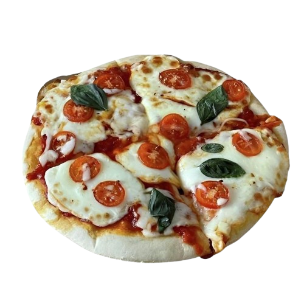
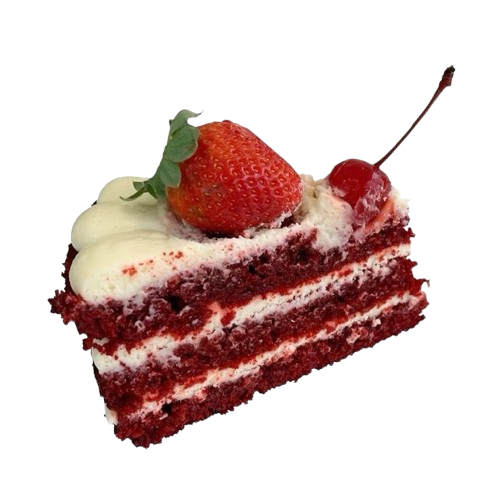
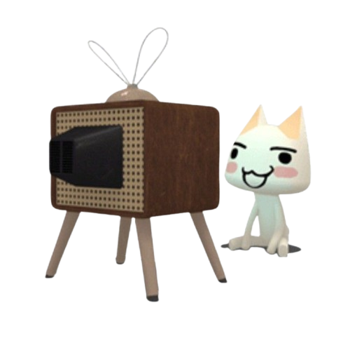
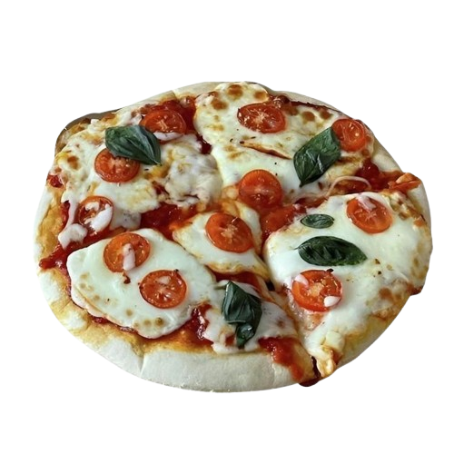
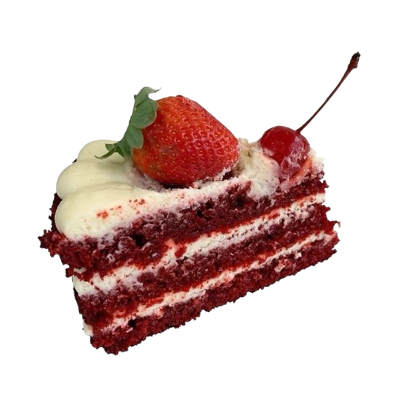
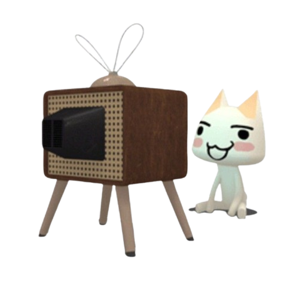
꩜ Movie: the one I like ꩜
.jpg) 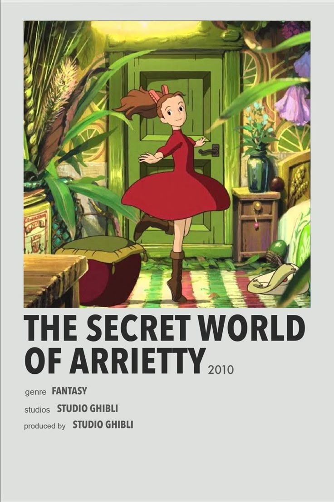
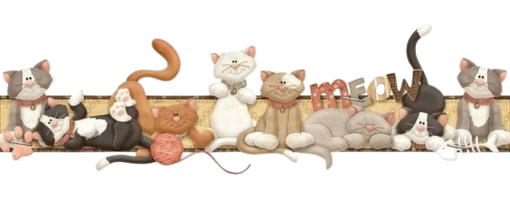
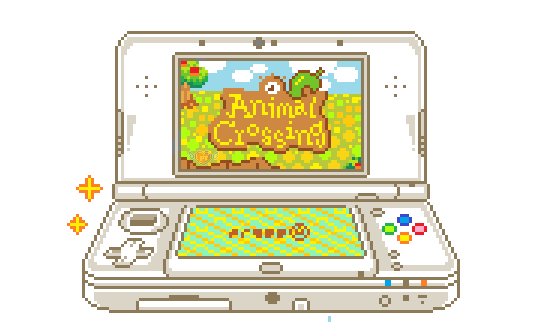
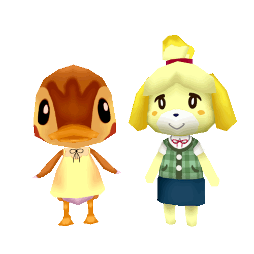
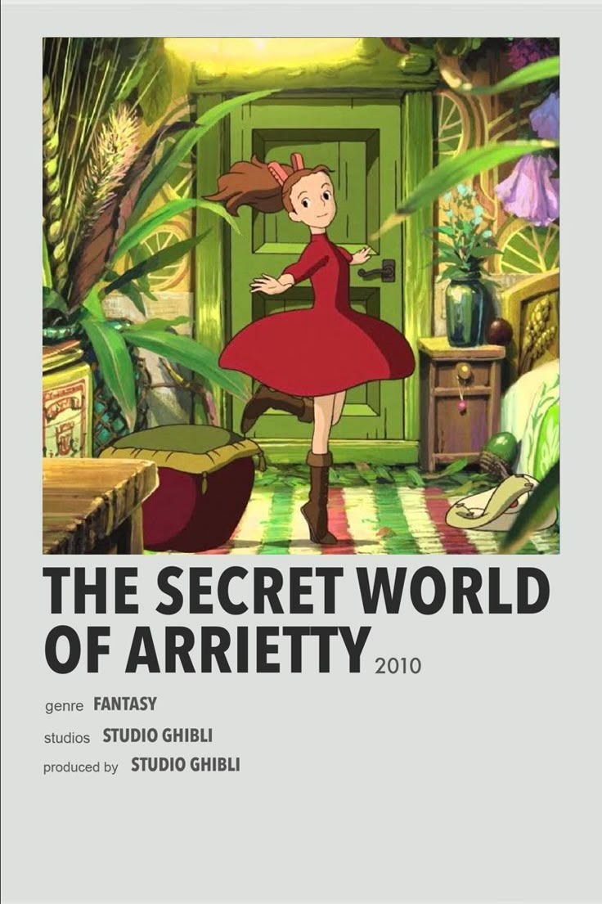
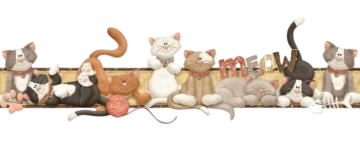
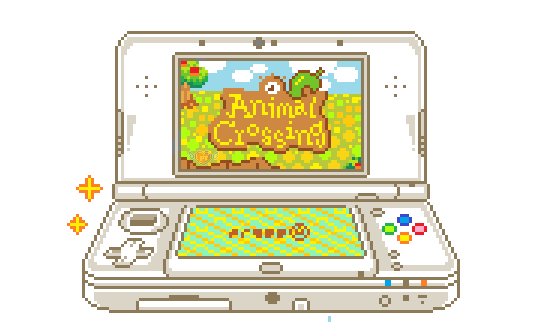
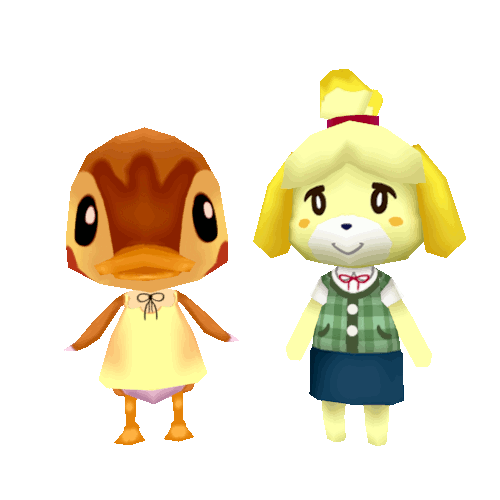